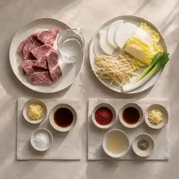
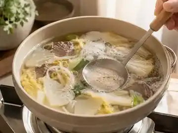
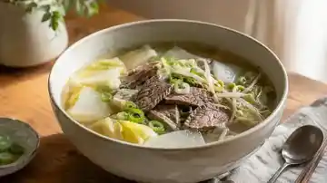
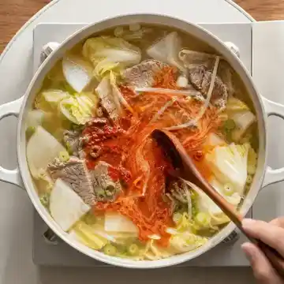
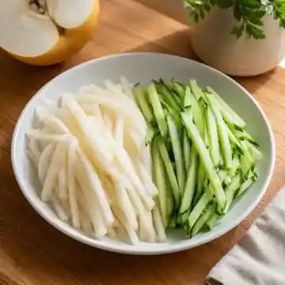
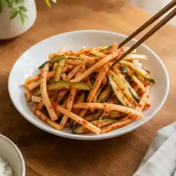

돌아와서도 그 국물이 생각나는 날이 있다.
사골을 열다섯 시간 끓일 수는 없다. 그래서 국거리 소고기만으로, 두어 시간 안에 끝나는 버전을 만들었다. 똑같지는 않다. 그런데 비슷한 방향으로는 간다.
WHY THIS RECIPE
왜 이 레시피인가
안성에서 국밥을 먹고 온 다음 주에 집에서 두 번 끓였다.
첫 번째는 실패했다. 무를 넣는 타이밍을 놓쳤다. 배추와 함께 한꺼번에 넣었더니 무가 덜 익은 채로 남았고, 국물에 단맛이 안 올라왔다. “재료가 같아도 순서 틀리면 다른 국이 나온다”는 말이 그제야 이해됐다.
두 번째는 순서를 지켰다. 무를 먼저, 몇 분 뒤에 배추, 콩나물은 맨 마지막. 그러자 [실제 결과].
열다섯 시간을 두어 시간으로 줄인 국물이 같을 리는 없다. 다만 이 레시피의 목표는 재현이 아니다. 그날의 온도를 집에서 한 번 더 만나는 것, 그 정도다.
KITCHEN NOTE
다대기는 왜 따로 낼까
국물의 기본 간과 매운맛을 분리하기 위해서다. 예전 국밥집은 처음부터 풀어서 냈지만 지금은 대개 따로 낸다. 절반만 풀면 한 그릇으로 두 가지 맛을 볼 수 있다.
INGREDIENTS
재료 · 2인분

AI 시안 이미지COOKING
이렇게 만들어요
번호 대신 도구 태그를 따라간다. 도마에서 시작해 냄비와 볼을 오가고, 마지막은 그릇이다.
소고기는 키친타월로 표면 물기를 닦는다. 무는 3mm 나박썰기, 배추는 한입 크기, 대파는 어슷썰기.
소고기와 물을 넣고 센 불. 끓기 시작하면 거품을 걷고 약한 불로 낮춰 고기가 부드러워질 때까지.

AI 시안 이미지고기를 건져 한입 크기로 정리. 냄비에 무를 먼저 넣고 가장자리가 투명해지면 배추와 고기를 다시 넣는다.

AI 시안 이미지콩나물과 대파를 더하고 국간장으로 기본 간. 콩나물을 넣은 뒤에는 뚜껑을 자주 여닫지 않는다.
다대기 재료를 섞는다. 따뜻한 육수 1큰술을 넣어야 덩어리가 풀린다.
다대기는 절반만 먼저 푼다. 색과 매운맛을 본 뒤 나머지를 나눠 넣고, 마지막 간은 소금으로.

AI 시안 이미지밥은 따로 담는다. 국물을 먼저 맛본 뒤 조금씩 말아야 두 가지 맛을 다 가져간다.
EDITOR'S NOTE
에디터 노트
- 간은 마지막에. 국물은 끓을수록 졸아들어 간이 올라간다.
- 남은 국물은 다음 날 더 진해진다. 물을 조금 더해 간을 다시 잡는 편이 낫다.
- 나트륨이 신경 쓰이면 국간장을 줄이고 무를 늘린다. 무가 단맛으로 빈자리를 메운다.
05 · PAIRING
국물이 무거워질 때쯤
배·오이 초무침
묵직한 국물이 계속되면 어느 순간 입이 지친다. 그때 아삭한 것 한 젓가락이 필요하다.
전통 반찬은 아니다. 안성의 배가 워낙 이름값을 하기에, 늦여름 식탁에 어울릴 조합을 하나 만들어 봤다.
PAIRING NOTE
왜 먹기 직전에 버무릴까
소금과 설탕이 채소의 수분을 끌어내기 때문이다. 미리 버무려 두면 배와 오이가 물러지고 접시 바닥에 물이 고인다. 양념은 미리 섞어두고, 채소와는 마지막에 만나게 한다.
INGREDIENTS
재료 · 2인분

AI 시안 이미지QUICK STEPS
이렇게 만들어요
배와 오이는 4~5cm 길이로 가늘게 썬다. 배는 갈변을 줄이려면 양념 직전에 손질.
간장·고추장·식초·설탕·소금을 충분히 섞어 고추장 덩어리가 남지 않게.
먹기 직전 붓고 두세 번만 가볍게 뒤집는다. 많이 버무리면 물이 나온다.

AI 시안 이미지국밥 한 숟가락 뒤에 맛본다. 배가 충분히 달면 설탕을 덜어내고, 국밥이 이미 얼큰하면 고추장을 줄인다.
 AI 시안 이미지
AI 시안 이미지
국밥 한 그릇, 초무침 한 접시, 밥 한 공기. 안성에서 먹은 하루를 집에서 다시 차리면 이 정도가 된다.